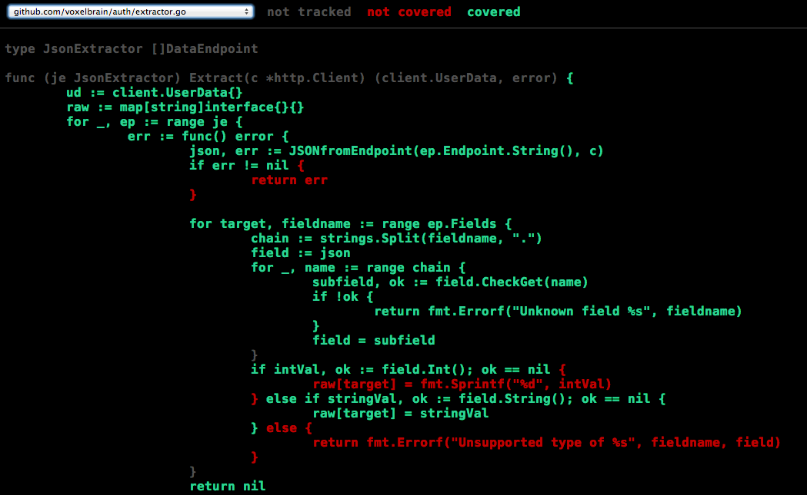

Since Go1
... it’s been 4 years
Alexander “surma” Surma
nuboLAB, GDG Berlin Golang
2013-12-12
Dates
- Go 1.0: 2012-03-28
- Go 1.1: 2013-05-13
- Go 1.2: 2013-12-04
Race detector
- Compilation:
go run -race program.go - Specially crafted, CPU-hungry binary
- Algorithm has been implemented/used by the Chrome Development Team
- Detects concurrent access to shared variables
var sharedVariable = 1
func worker() {
for {
sharedVariable += 1
time.Sleep(100 * time.Millisecond)
}
}
func main() {
go worker()
for {
fmt.Printf("> %d\n", sharedVariable)
time.Sleep(1 * time.Second)
}
}
Preemptive Scheduling
- Schedular was cooperative (I/O, channel sends, time.Sleep(),…)
for {}could starve all other goroutines- The scheduler is invoked occasionally upon entry to a function
for {}can still starve all other goroutines. But not in realistic use-cases.
First-class C++ bindings
- With
cgoyou can call C code from Go - For C++ you had to write a C-Wrapper as a library
cgonow understands C++- v8-Bindings anyone?
package main
// int fortytwo()
// {
// return 42;
// }
import "C"
import "fmt"
func main() {
fmt.Println(int(C.fortytwo()))
// Output: 42
}
Test coverage
$ go test -cover *.go ok command-line-arguments 0.038s coverage: 43.2% of statementsDetails:
$ go test -coverprofile=c.out *.go $ go tool cover -func=c.out github.com/voxelbrain/auth/authenticationservice.go: init 100.0% github.com/voxelbrain/auth/authenticationservice.go: Verify 100.0% github.com/voxelbrain/auth/authenticationservice.go: verifyDataEndpoints 83.3% github.com/voxelbrain/auth/authenticationservice.go: verifyAuthenticationEndpoints 82.4% github.com/voxelbrain/auth/authenticationservice.go: AuthenticationServiceHandler 0.0% // ... total: (statements) 43.2%
Test coverage
$ go tool cover -html=c.out -o coverage.html
Method values
type BinaryFunc(a, b int) int
var f BinaryFunc
The old way:
f = func(a, b int) int {
return someStruct.BinaryMethod(a, b)
}
Now:
f = someStruct.BinaryMethod
Small things
text/templatenow haseq, ne, lt, gt, …- Easy cross-compilation
- freebsd/arm, netbsd/386, netbsd/amd64, netbsd/arm, openbsd/386 and openbsd/amd64
- Performance
fmt.Sprintf("%[3]c %[1]c %c\n", 'a', 'b', 'c')
Go 1.3?
Incoming changes
os/fsnotifycgo: Objective-C support- Complete linker overhaul
- runtime: 100% precise garbage collection
- nacl/amd64p32, nacl/386, darwin/arm? android/arm?
- runtime: shared library support?
<Thank You!>
Questions?
emaila.surma@nubolab.org
g++AlexanderSurma
twittersurmair
githubsurma